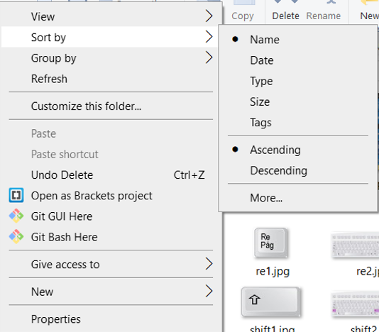

Ordenar Carpetas y Archivos
A medida que el número de archivos con los que se trabaja aumenta, necesitamos encontrar una manera rápida y eficiente de organizarlos.
Una forma fácil de encontrar un archivo consiste en ordenar el contenido en carpetas según ciertas características, como: agrupar todos los archivos de un mismo mes, la información de un proyecto, etc. Si después de ese orden, todavía es complicado encontrar información, entonces lo más fácil es ordenar los archivos de acuerdo a otros criterios.
Los siguientes pasos permiten ordenar archivos de la manera más fácil:
- Abra la carpeta donde desea ordenar los archivos.
- En cualquier lugar de la carpeta, excepto sobre un archivo, despliegue el menú contextual, con el botón derecho del ratón (mouse).

- Elija la opción con la que desea ordenar los archivos o carpetas (Arrange icons by). Las opciones son:
- Nombre (Name): ordena los archivos por nombre, en orden alfabético.
- Tamaño (Size): ordena los archivos por el tamaño del archivo o carpeta.
- Tipo (Type): ordena los archivos por tipo de archivo; ejemplo: Word, Excel, Power Point, imagen jpg, gif, etc.
- Fecha en que fue modificado (Date Modified): los archivos se ordenan por la última fecha en que fueron modificados o editados.
- Al seleccionar la opción, los archivos y carpetas se habrán ordenado automáticamente de la manera indicada.